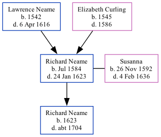

The son of Lawrence Neame and Elizabeth CurlingRichard Neame, the 10 times great-grandfather of Nigel Horne, was born in Woodnesborough, Kent, England in Jul 1584 and married Susanna (with whom he had 1 child, Richard) in Woodnesborough on Nov 11, 16161.
He died on Jan 24, 1623 in Woodnesborough and was buried on Feb 2, 1623.
Kent, England, Tyler Index to Parish Registers, 1538-1874 Online publication - Provo, UT, USA: Ancestry.com Operations, Inc., 2010. This collection was indexed by Ancestry World Archives Project contributors.Original data - Frank Watt Tyler. The Tyler Collection. Canterbury, Kent, England: The Institute of Herald
Family Tree

Map
Generated by Ged2Site. Last updated on Apr 1, 2025